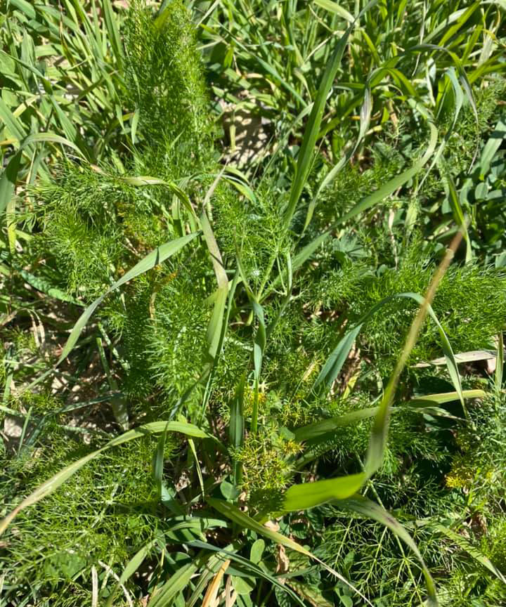

Liquore al finocchietto
Si lascia riposare il finocchietto 10 giorni nell’alcool, dopo di che si fa uno sciroppo con 1 l d’acqua e 550 gr di zucchero che poi si aggiungerà all’alcool una volta raffreddato. Si imbottiglia e si lascia riposare almeno 10/15 giorni.
Carlotta